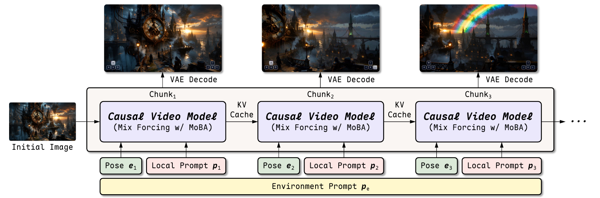

Mix the training modes
MoBA attention combines teacher forcing for causal next-chunk prediction with bidirectional training to preserve visual priors.
Causal Pre-Training via Mixture Attention for Interactive World Models
Core method of LingBot-World-Infinity
1The Hong Kong University of Science and Technology (HKUST)
2Robbyant
‡Project Lead†Corresponding Author
Mix Forcing combines teacher forcing and bidirectional training to learn causal video generation while preserving pretrained visual priors. With chunk-wise prompt conditioning and four-step distillation, it enables autoregressive world simulation with camera control, online text updates, and one-hour rollouts. Trained with MoBA masks, the model generates video chunks using current inputs and cached history.

MoBA attention combines teacher forcing for causal next-chunk prediction with bidirectional training to preserve visual priors.
Chunk-wise cross-attention uses a shared environment prompt and the current local prompt, without exposing future instructions to the current chunk.
Consistency and distribution matching distillation turn the causal initialization into a four-step autoregressive generator.
Compare six interactive world models under the same scene and control sequence.
Choose camera-controlled exploration or online prompt interaction, then play the results together.
A recorded interactive model rollout.
Follow the journey, or jump to a moment below.
A landmark revisit sequence.The camera looks away, then returns to the waterfall and red foliage seen earlier.
@misc{gao2026mixforcing,
title = {Mix Forcing: Causal Pre-Training via Mixture Attention for Interactive World Models},
author = {Gao, Zelin and Ouyang, Hao and Zhu, Jiapeng and Wang, Qiuyu and Chen, Jingye and Liu, Zichen and Zhu, Xing and Shen, Yujun and Xu, Yinghao},
year = {2026},
url = {https://zelingao98.github.io/mixforcing/}
}